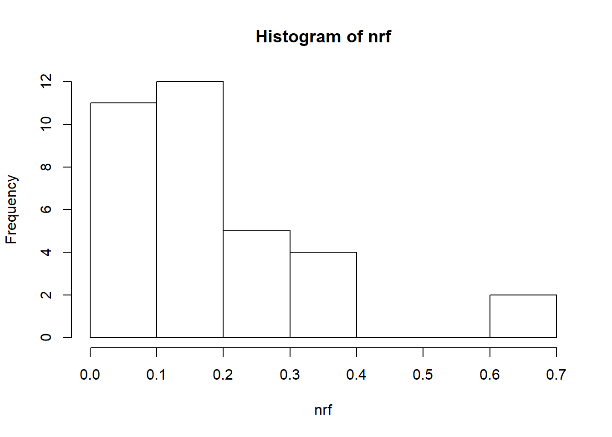

MarkingDuplicateFragments
KLRhodes
2019-02-17
Last updated: 2019-02-18
Checks: 6 0
Knit directory: CM_ATAC_Workflow/analysis/
This reproducible R Markdown analysis was created with workflowr (version 1.2.0). The Report tab describes the reproducibility checks that were applied when the results were created. The Past versions tab lists the development history.
Great! Since the R Markdown file has been committed to the Git repository, you know the exact version of the code that produced these results.
Great job! The global environment was empty. Objects defined in the global environment can affect the analysis in your R Markdown file in unknown ways. For reproduciblity it’s best to always run the code in an empty environment.
The command set.seed(20190216) was run prior to running the code in the R Markdown file. Setting a seed ensures that any results that rely on randomness, e.g. subsampling or permutations, are reproducible.
Great job! Recording the operating system, R version, and package versions is critical for reproducibility.
Nice! There were no cached chunks for this analysis, so you can be confident that you successfully produced the results during this run.
Great! You are using Git for version control. Tracking code development and connecting the code version to the results is critical for reproducibility. The version displayed above was the version of the Git repository at the time these results were generated.
Note that you need to be careful to ensure that all relevant files for the analysis have been committed to Git prior to generating the results (you can use wflow_publish or wflow_git_commit). workflowr only checks the R Markdown file, but you know if there are other scripts or data files that it depends on. Below is the status of the Git repository when the results were generated:
Ignored files:
Ignored: docs/figure/
Untracked files:
Untracked: code/CollateFlagstat.R
Untracked: code/MarkDupFlagstatNoLoops.bash
Untracked: code/submit-MarkDupFlagstat.sh
Untracked: output/ATACQCsamplenamelineday.txt
Untracked: output/flagstat_all.txt
Unstaged changes:
Modified: _workflowr.yml
Note that any generated files, e.g. HTML, png, CSS, etc., are not included in this status report because it is ok for generated content to have uncommitted changes.
These are the previous versions of the R Markdown and HTML files. If you’ve configured a remote Git repository (see ?wflow_git_remote), click on the hyperlinks in the table below to view them.
| File | Version | Author | Date | Message |
|---|---|---|---|---|
| Rmd | 573d9cb | KLRhodes | 2019-02-18 | wflow_publish(“analysis/MarkingDuplicateFragments.Rmd”) |
| html | 8d42fdd | KLRhodes | 2019-02-17 | Build site. |
| Rmd | 1c7115d | KLRhodes | 2019-02-17 | wflow_publish(“analysis/MarkingDuplicateFragments.Rmd”) |
| html | 1de8b53 | KLRhodes | 2019-02-17 | Build site. |
| Rmd | 3d4fb6f | KLRhodes | 2019-02-17 | wflow_publish(“analysis/MarkingDuplicateFragments.Rmd”) |
Marking Duplicates in bam files
The bam files that I aligned with subread do not have duplicates marked. These steps mark duplicates and eventually output text files containing all of the stats that come out of samtools flagstat
Ran on test Midway2, Gilad partition with 12G of memory 2/17/19 using only one bam file
takes about 25 min per bam file
MarkDupFlagstatNoLoops.sh can be found in code directory– (will find a way to echo it here)
#show code from MarkDupFlagstatNoLoops.sh
noquote(readLines("../code/MarkDupFlagstatNoLoops.bash")) [1] #!/bin/bash
[2]
[3] f=$1
[4]
[5] echo $f
[6]
[7]
[8] #have bam file from subread align
[9] #need to name sort the bam file
[10] echo "name sorting"
[11] samtools sort -n $f -o ./FlagStat/${f/.bam/.namesorted.bam}
[12]
[13] #need to use fixmate to add matescore tags
[14] echo "fixmate"
[15] samtools fixmate -m ./FlagStat/${f/.bam/.namesorted.bam} ./FlagStat/${f/.bam/.fixed.namesorted.bam}
[16]
[17] #need to get position sorted file to feed into markdup
[18] echo "position sorting"
[19] samtools sort -o ./FlagStat/${f/.bam/.fixed.positionsorted.bam} ./FlagStat/${f/.bam/.fixed.namesorted.bam}
[20]
[21] #now use markdup to mark duplicate alignments. -l 600 indicates the expected maximum read length. I dont
[22] #know if this means read length or insert length or fragment length for PE data. -s prints short summary. can add
[23] #-r to actually REMOVE the duplicates
[24] echo "marking duplicates"
[25] samtools markdup -l 600 -s ./FlagStat/${f/.bam/.fixed.positionsorted.bam} ./FlagStat/${f/.bam/.markdup.bam}
[26]
[27] #run samtools flagstat to get text file output that includes duplicate count
[28] echo "running flagstat"
[29] samtools flagstat ./FlagStat/${f/.bam/.markdup.bam} > ./FlagStat/${f/.bam/.flagstat.txt}
[30] #from the CM_TC_ATAC/19209_and_19238/bam directory
sbatch --partition=gilad --mem=4G submit-MarkDupFlagstat.shNow I have separate txt files with the flagstat output for each sample. I want to pull out total fragments, mapped fragments, and duplicate count.
Did this using CollateFlagstat.R
noquote(readLines("../code/CollateFlagstat.R"))Warning in readLines("../code/CollateFlagstat.R"): incomplete final line
found on '../code/CollateFlagstat.R' [1] #!/usr/bin/env Rscript
[2]
[3] #Collate flagstat metrics from each flagstat.txt file by running this script on all and appending info
[4] #to a new txt
[5]
[6]
[7] # Obtain name of fastq file passed at the command line
[8] args <- commandArgs(trailingOnly = TRUE)
[9] stopifnot(length(args) == 1)
[10] flag <- args[1]
[11] stopifnot(file.exists(flag))
[12]
[13] #read in the text file, separate at plus sign for ease
[14] txt<- read.csv( flag, header=F, sep="+")
[15]
[16] value<- txt$V1
[17] flagstat<- gsub("0 ", "",txt$V2)
[18] file<- basename(flag)
[19]
[20] info=noquote(cbind(file, flagstat, value))
[21] colnames(info)<- c("sample", "flagstat_metric", "value")
[22]
[23] write.table(info, file="flagstat_all.txt", append=TRUE, sep=",", quote=FALSE,
[24] \trow.names=FALSE, col.names = !file.exists("flagstat_metrics.txt"))
[25] \t
[26] \t #Loops through all .flagstat.txt files in the directory
sbatch --partition=gilad --mem=4G submit-CollateFlagstat.shCopied flagstat_all.txt to local for analysis. It exists in the ouput folder of the workflowr directory
all<- read.csv("../output/flagstat_all.txt", header=T, sep=",", stringsAsFactors = F)
#sampleinf<- read.table("../output/ATACQCsamplenamelineday.txt", header=T)
all$value<- as.numeric(as.character(all$value))Warning: NAs introduced by coercion#all<- all[order(all$sample),]
dupcount<- all[all$flagstat_metric ==" duplicates",]
mappedcount<- all[grep(" mapped \\(", all$flagstat_metric),]
#plot the number of mapped fragments
barplot(mappedcount$value)+
abline(h=20000000, col="red")
numeric(0)#get nonredundant fraction (number of unique fragments/total fragments)
nrf<- (mappedcount$value-dupcount$value)/mappedcount$value
hist(nrf)
#is nrf different between the two lines?
barplot(nrf)+
abline(h=mean(nrf), col="blue")numeric(0)#most are still very low. the undetermined samples have high non redundant fraction, but this is not surprising because they'll have reads from all the samples in the lane.Notably, Nick also had lots of duplicate reads
#(see Figure S5 from genome biology paper--need to check on the final usable fragment count though)Banovich 2018 Figure S5
#get the number of unique mapped fragments per sample
uniquemappedfrags<- (mappedcount$value-dupcount$value)
barplot(uniquemappedfrags) +
abline(h=10000000, col="red")numeric(0)Next steps: remove duplicates, remove MT reads Should I run fragment size distribution on the cleaned bams or on original bams?
sessionInfo()R version 3.5.2 (2018-12-20)
Platform: x86_64-w64-mingw32/x64 (64-bit)
Running under: Windows 10 x64 (build 17134)
Matrix products: default
locale:
[1] LC_COLLATE=English_United States.1252
[2] LC_CTYPE=English_United States.1252
[3] LC_MONETARY=English_United States.1252
[4] LC_NUMERIC=C
[5] LC_TIME=English_United States.1252
attached base packages:
[1] stats graphics grDevices utils datasets methods base
loaded via a namespace (and not attached):
[1] workflowr_1.2.0 Rcpp_1.0.0 digest_0.6.18 rprojroot_1.3-2
[5] backports_1.1.3 git2r_0.24.0 magrittr_1.5 evaluate_0.12
[9] stringi_1.2.4 fs_1.2.6 whisker_0.3-2 rmarkdown_1.11
[13] tools_3.5.2 stringr_1.3.1 glue_1.3.0 xfun_0.4
[17] yaml_2.2.0 compiler_3.5.2 htmltools_0.3.6 knitr_1.21